Contents
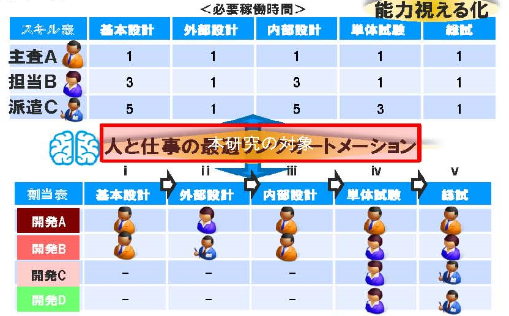
能力差を考慮した開発における人員資源割当問題について
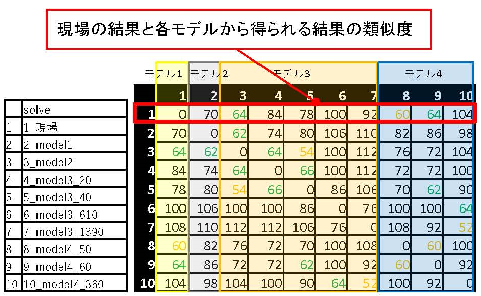
工事手配業務に対する数理最適化の活用と意思決定の支援
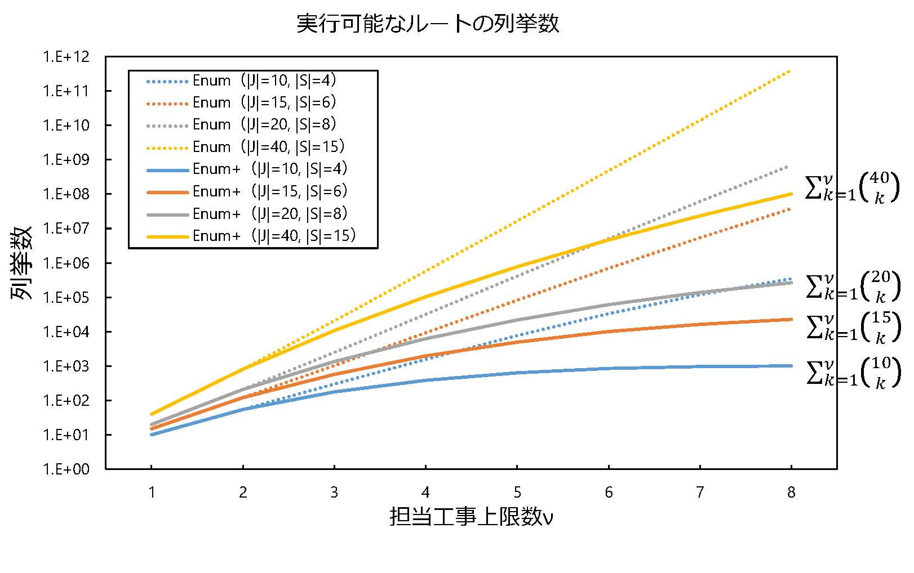
工事立会者手配問題に対する集合被覆アプローチ
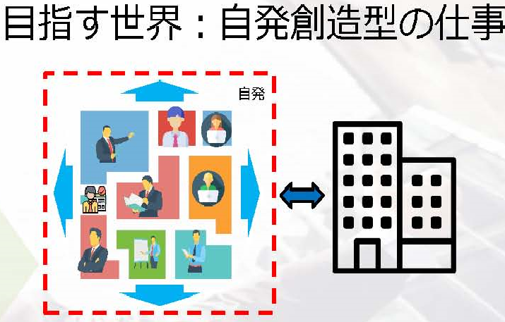
人と仕事のマッチング パーソナル情報を活用した人材配置問題の解決方法の提案
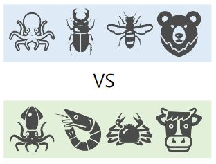
MOBAにおけるデータ分析を用いた戦略立案
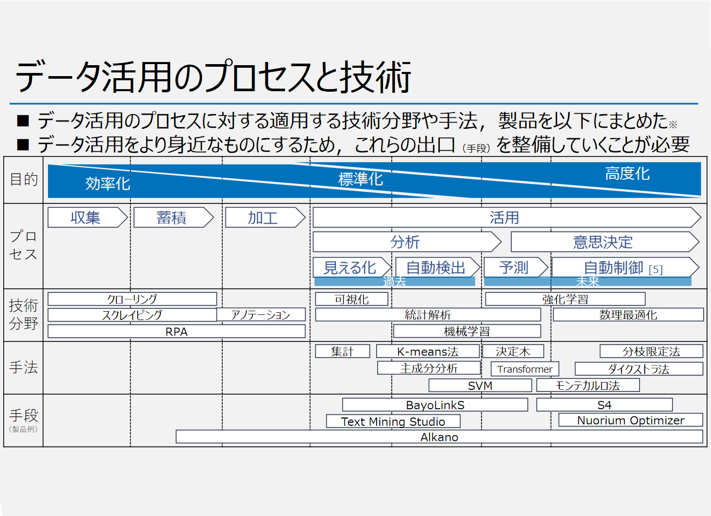
データドリブンによる新たな価値創造-データ活用をより身近なものに-
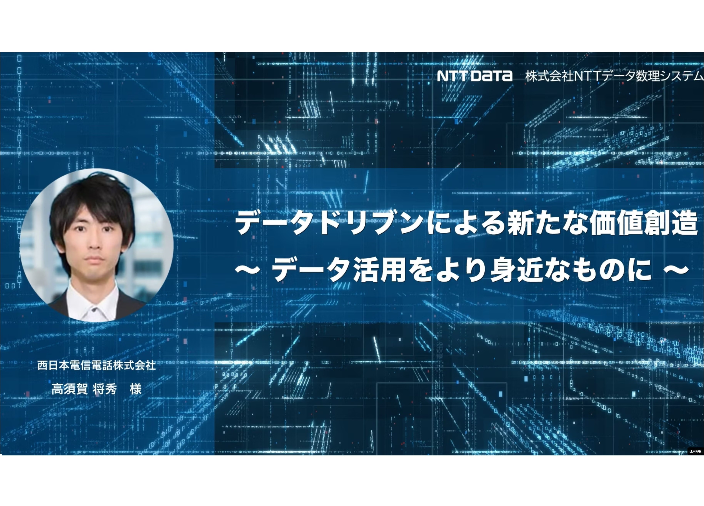
データドリブンによる新たな価値創造-データ活用をより身近なものに-（動画アーカイブ）
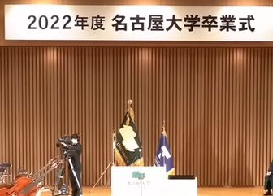
2022年度名古屋大学卒業式 総大の辞 (答辞)
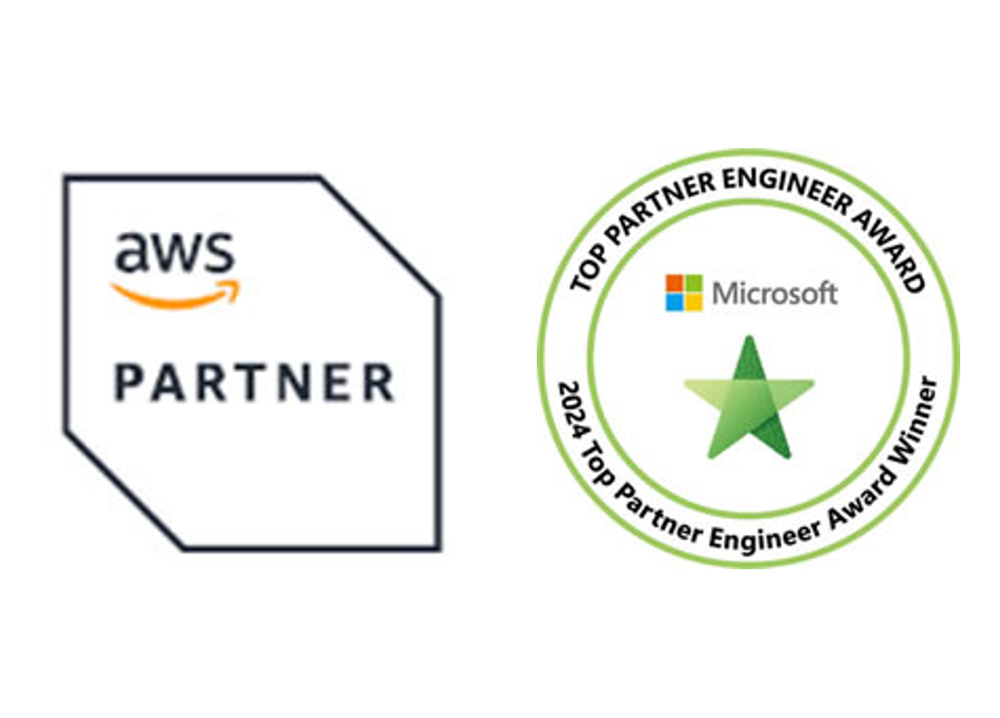
2024 Japan AWS All Certifications Engineers、Microsoft Top Partner Engineer Award選出
統合資格分析ダッシュボードサービスを作ってみた話
Dify×StreamlitによるAIエージェント活用の模索
Google/AWS/AzureAllCerts更新奮闘記
数理最適化×Azure×Fabricのコラボレーション 数理最適化をより身近なものにするために ー万博訪問ルート最適化サービスを作ってみたー
数理最適化とは
数理最適化とは，“データ”と“因果関係や規則（ルール）”がわかって いながら，解決策が導き出せない現実の問題に対し，最適解を導き出す問題解 決の手法です．最適化ソリューションは意思決定支援の場で幅広く導入されて います．数理最適化は4つのSTEPから成ります．まずSTEP1では，現実の問題を 整理します．特に次の3つの点(1．何を意思決定するのか，2．実務的なルール・ 制約は何か，3．何を「最大化」or「最小化」or「平準化」するか)を整理する ことが重要です．次にSTEP2では，STEP1で整理した問題を"数式"で表現，つま り最適化モデルを構築します．最適化モデルにおいて，STEP1の1．は"変数"， 2．は"制約条件"，3．は"目的関数"に該当します．次にSTEP3では，ツールなど を用いて得られた最適化モデルの最適解を検証します．「数学的に最適解＝現 実の意思決定」とは限らないので，場合によってはSTEP1に戻り，制約条件の再 検討を行います．STEP1からSTEP3を納得のいくまで，何度も繰り返すことが重 要です．最後にSPTE4では，プロトタイプの最適解に納得したらシステム化作業 に移ります．作成した最適化モデルをexeやDLL等の形式にできると，他のシス テムに組み込んだり，GUI部分と並行して開発を進めることが可能です．
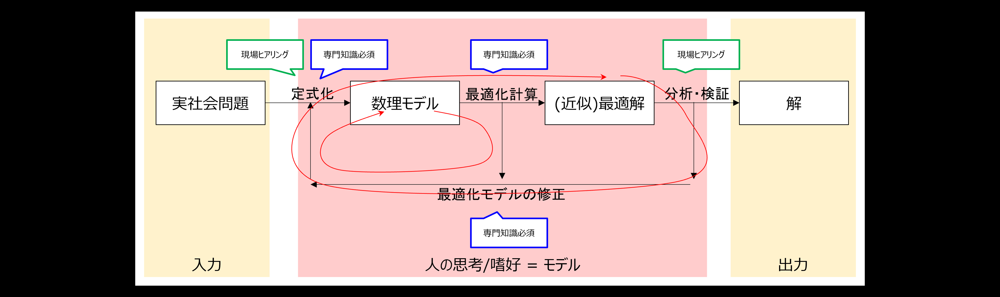
工事立会者手配問題とは
与えられた全ての工事に対して立会者の割当を決定する問題を工事立会 者手配問題と呼びます．各工事に立ち会う立会者を割り当てる必要があります が，実社会では最適化手法を用いて割当てを決定しているわけではなく，工事 の割当てを行うスキルを持った手配者が，いくつかのルールや経験則に基づい て割当てを行っています．ルールには，たとえば，1つの工事に対して割り当 てる立会者は1人など，明確なものもあれば，難易度の高い工事を1人に集中さ せないようにするなどの曖昧なものも存在します．また，手配者が手配結果の 良し悪しを判断する基準についても，目的関数に含めるべき指標は複数ありま すが，各指標の重要度は曖昧です．指標には，1人の立会者が担当する複数の工 事間の移動時間を短くしたい，スキルの低い人に難易度の高い工事を割り当て ると事故が起こりやすくなるため各工事を適切なスキルを持つ人に割り当てた いなど，いくつかの要望に対応するものがありますが，これらの複数の指標は トレードオフの関係になることが多く，いずれの指標をどの程度重視すれば良 いかに関する明確な基準があるわけではありません．どの指標をどの程度重視 すべきであるかは，工事の数や場所，および工事に割り当てる立会者の数やス キルなどによって異なり，現状では手配者の勘と経験に任されています．
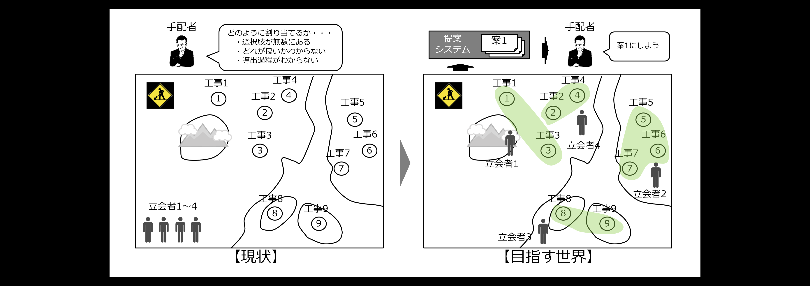